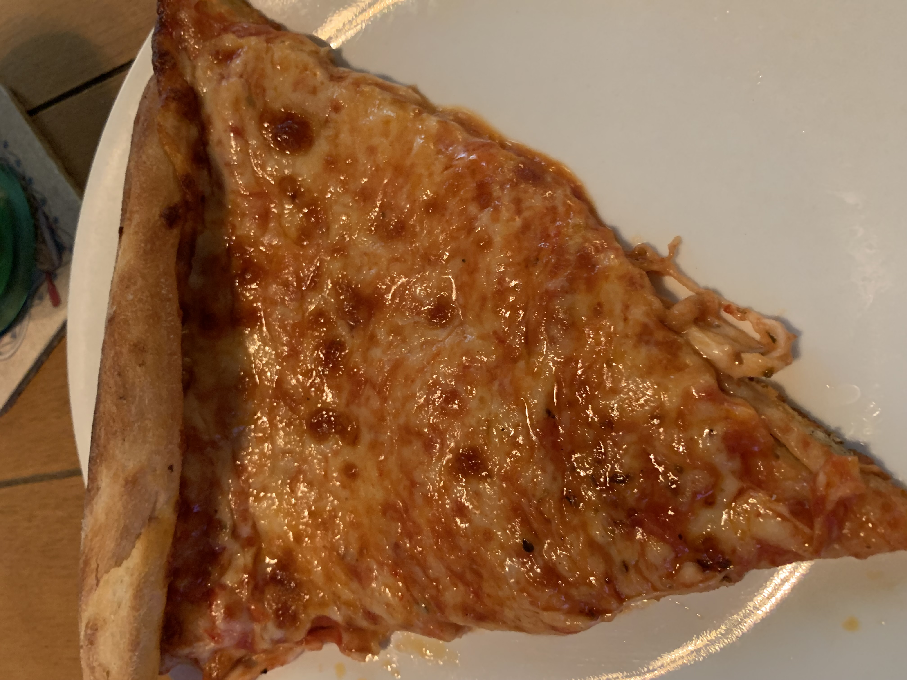

Raimo's pizzeria is home to the world's most delicious pizza. It is located in the village of Baldwin in Long Island, NY. Raimo's Pizzeria's most popular dish is the cheese pizza, but they also make many varieties of specialty pizzas and aslo some popular italian dishes.

What Makes Raimo's Pizza So Very Special?
The cheese! Raimo''s uses a delicious blend of cheeses and PILES IT ON. Every slice of pizza is guarenteed to be smothered in a thicc layer of scrumptions cheese.
The sauce! Raimo''s tomato sauce is tangy, mildly sweet, and perfectly spiced.
The Crust! Raimo's makes its pizzas with a thin crust that is crunchy on the outside and soft and chewy on the inside. Yumm!!
The specialty slices! Raimos offers a wide variety of to-go specialty pizza slices. They are perfect for a quick, easy, and wallet-friendly lunch.
The customer service! Raimos has been a part of the Freeport family for decades and is known for it's excellent customer service and friendly atmosphere.